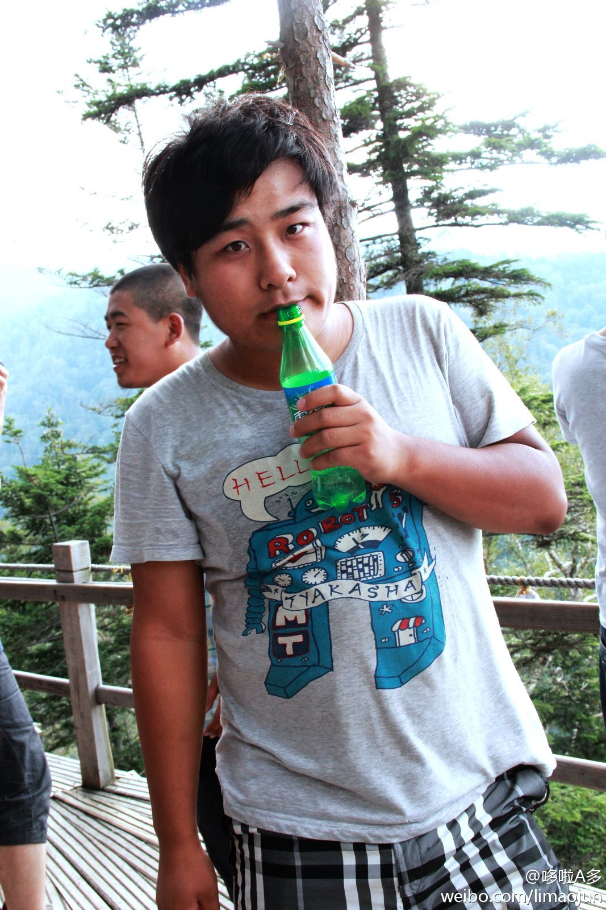

有生以来第一次喝10块钱一瓶的雪碧，喝的老美了~~比火车上的都贵，其实想想也对，火车上运输多方便啊，这海拔1600多米，每瓶都是走了3000多米的山路上来的。。10块也不贵了。要是我11块钱都不能干这生意。。。嗯，12也不干！啥都不背上去都快累死了。。。 
公司这次活动让我为以后自驾游或其他长途驾驶打下了良好的基础，两天多开了900多公里的车，而且还没怎么睡觉，山路、大坑路、细砂路各种路况啊。。。就是路线有点坑爹了！红牛貌似真的很管用，第一天开了10多个小时车，爬了4个多小时的山，睡了三个小时不到。。。。第二天还能继续。。。居然还不困。
刚才在网易上看见一条新闻说“90后美女开保时捷晒53岁男友”。。。看完照片就觉得我怎么就不是女的呢，后来转念一想也对，就算男人四五十了,只要有钱,还可以找个二十多的美女,不过女的就难了,四五十了,再有钱会有多少帅哥会跟你玩?